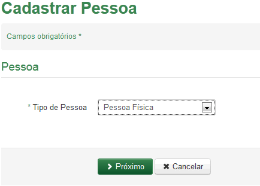

Cadastrar Pessoa
Para Cadastrar Pessoa Física acione a opção e selecione a opção, observando que o campo com asterísco (*) é de preenchimento obrigatório.

Para cadastrar Pessoa Física, selecione essa opção no Tipo de Pessoa;
Acione a opção o sistema exibirá o formulário para o cadastro de Pessoa Física.
Para desistir do cadastro, acione a opção  o sistema retorna para a tela "Pesquisar Pessoa".
o sistema retorna para a tela "Pesquisar Pessoa".

Created with the Personal Edition of HelpNDoc: Free EBook and documentation generator